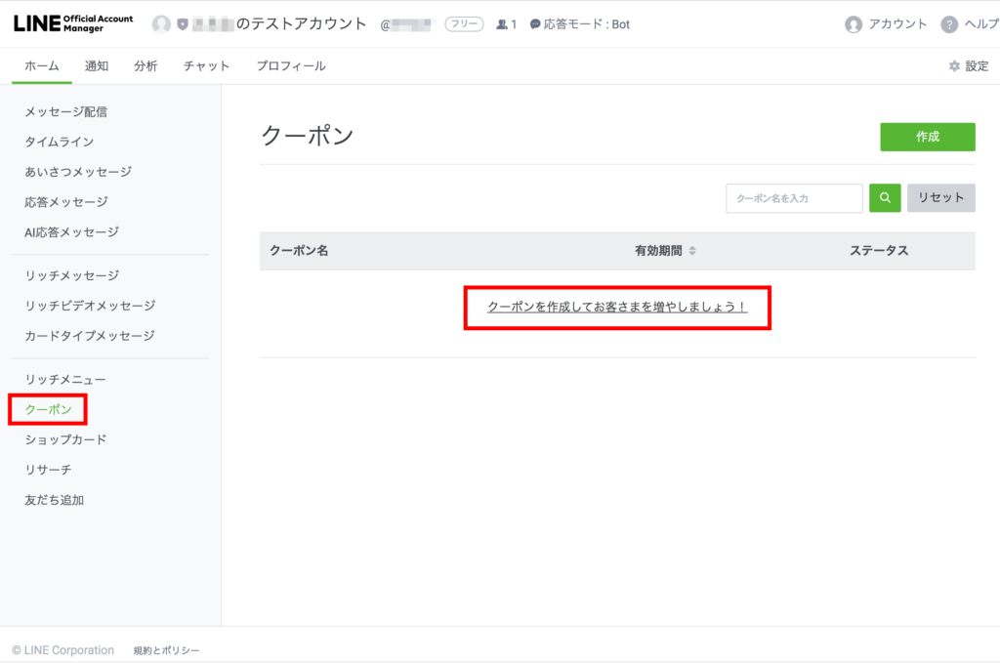
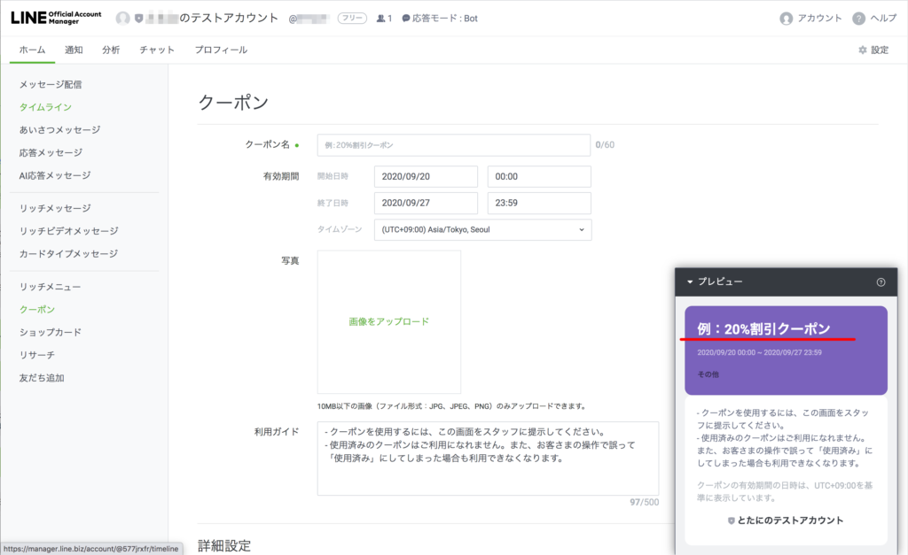
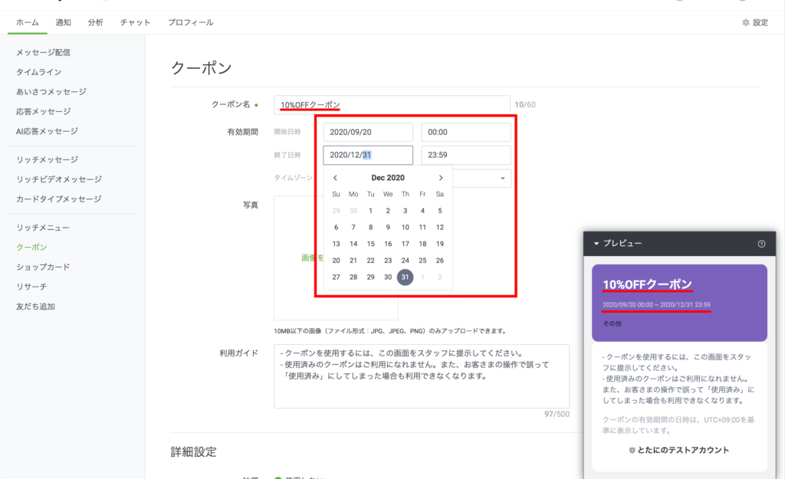
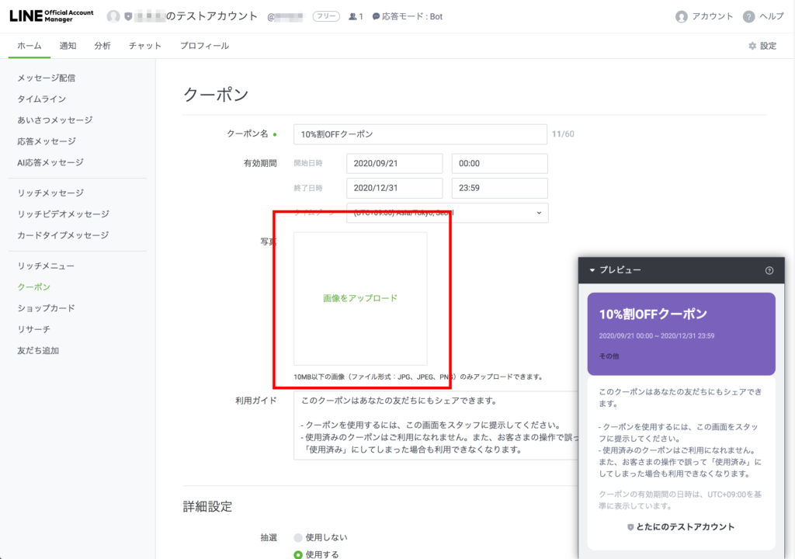
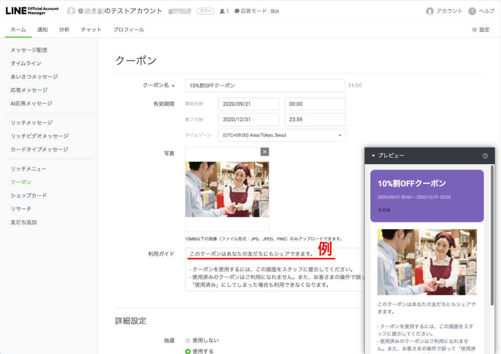
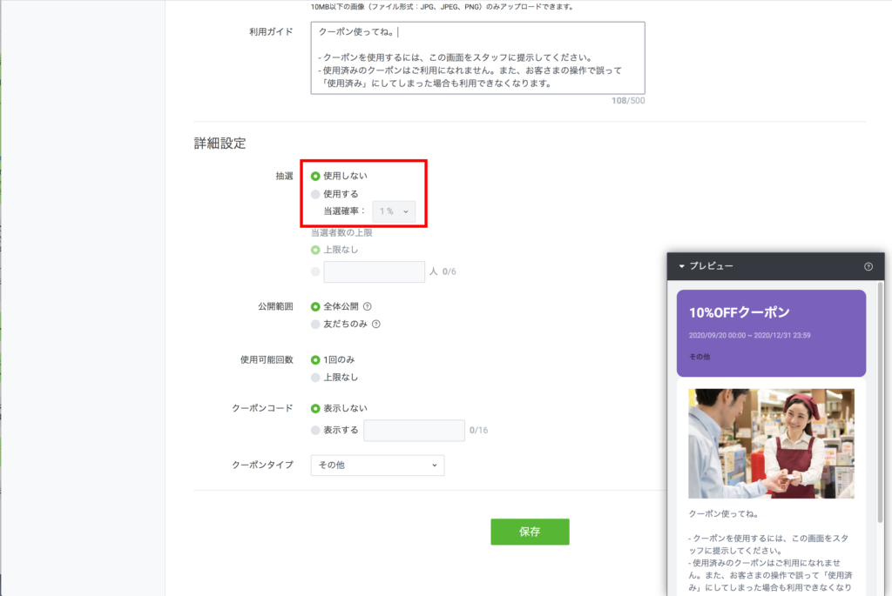
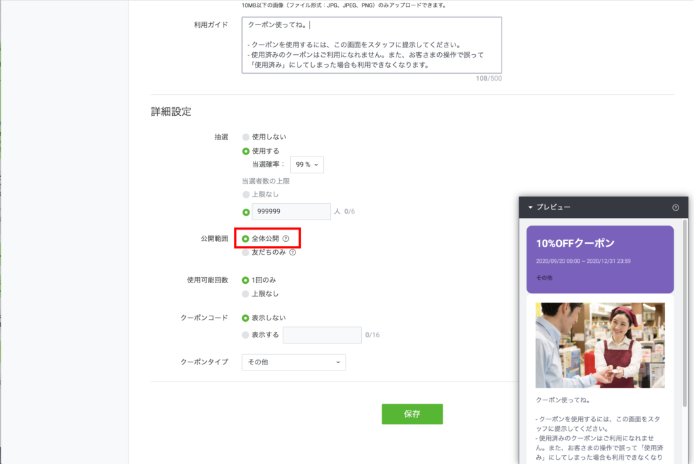
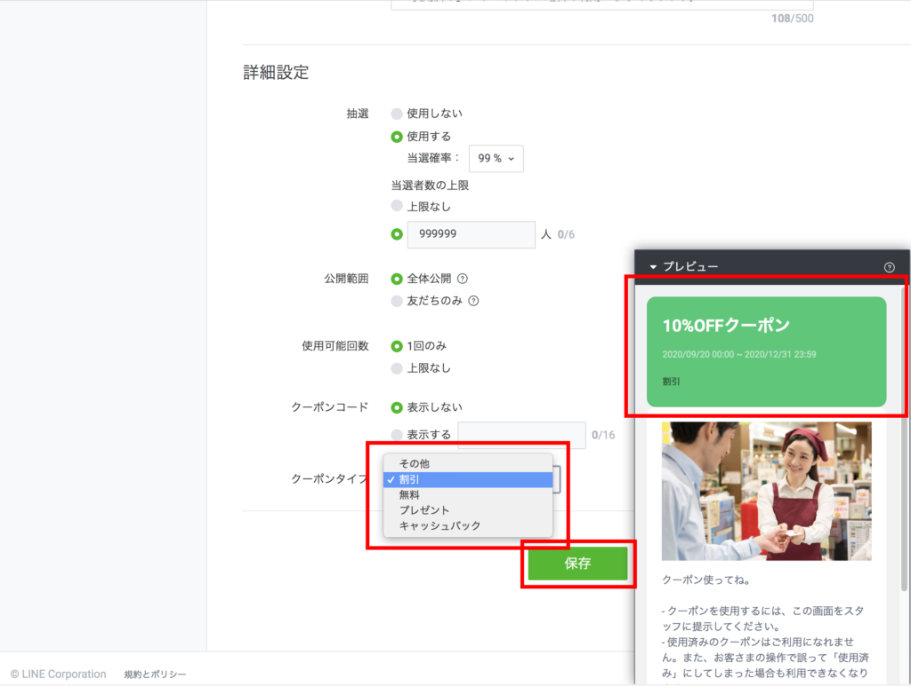
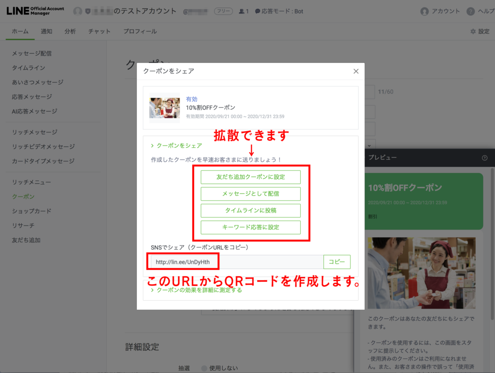

#005 LINEでクーポンを発行しよう！

みなさん、コンビニのレシートやショッピングサイトなどでクーポンを手に入れたことはありますよね？「おっ、これで次回は〇〇無料なのか！」と、うれしくなるでしょう。
同様に、あなたのお店やビジネスでお得に利用できるクーポンを、LINE公式アカウントで簡単に配布することができます！さて、抽選にすればよいのか、全員もれなくプレゼントにしたほうがよいか…？ 今回のブログは、そのあたりも深掘りしていきますので、よろしくお願いします！

（１）まずはおなじみ、PCから「LINE Official Account Manager」を開きます。ログイン方法等がわからない場合は、「#3 リッチメニューを作成」を参考にしてください。左サイドバーの「クーポン」を選択します。

「クーポンを作成してお客さまを増やしましょう！」というテキストをクリックすると、クーポン設定画面が表示されます。

（２）右下のスマホっぽい画像に「例：20%クーポン」と表示されていますが、今回はわかりやすいよう「10 %OFFクーポン」を作成しますね。左の「クーポン名」の欄に「10%OFFクーポン」と入力すると、右下の画像の文字も変わります。

開始日時や終了日時を、プルダウンメニューのカレンダーから設定します。業種や内容によってどの程度の期間を設けるかは違って来ますが、ここではひとまず年内いっぱい使えるクーポンにします。

（３）せっかくなので、画像を入れます。ここでは、そのクーポンを利用するシーンを思い浮かべてもらえるような画像を選ぶのが大事です！セミナー等のクーポンであれば、会議室で講師がセミナーを行なっているような写真がいいですね。クーポンの内容を直感的に理解してもらい、有効活用してもらいましょう。

（４）「利用ガイド」には、初期設定で必要最低限の内容がすでに入力されています。ただ、それだけでは内容が不十分なので、友だちが「いいクーポンを手に入れた！」と喜んでくれるような文章を考えて書き足しましょう。

（５）「詳細設定」で、クーポンの仕様を設定します。今回の記事冒頭の「抽選にすればよいのか、全員プレゼントにしたほうがよいのか」ですが、結論から先に言うと「抽選」というテイにしておいて「99%の確率で当たる」というような設定がよいです。まず滅多に外れることのない抽選ということになりますが、友だちは「やったー当たった！」と喜んでくれるからです。
当選者の上限も、「なし」でいいでしょう。ただ、豪華な景品プレゼントや大幅割引を行う場合は、売り上げの規模に応じ、可能な範囲内で設定してください。ちなみに、当選者の上限を設定する際、欄外に「0/6」と書いてありますが、これは上限が６人という意味ではなく、「6桁の数字（999999）まで」という意味です。

（６）「公開範囲」については、「全体公開」を選びます。理由は最後に書きますね！ 「使用可能回数」は、1回のみか複数回（上限なし）なのかを選べます。１回のみだと、実際にクーポンを使うときにスタッフがクーポンボタンを押し、クーポン利用済み、となります。
「クーポンコード」の入力は、任意です。「表示する」にしてコード番号などを入力しておけば、友達のクーポン画面にそれが反映されます。

（７）最後に「クーポンタイプ」を選びます。こちらは、プルダウンメニューからどれを選ぶかによって、クーポンの色が変わるだけです。

クーポン情報を全て入力し、「保存」ボタンを押すと、各種SNSで配布するボタンやURLが表示されます。URLを元にQRコードなどを作成することもでき、クーポンを広く拡散できます。自分のLINE公式アカウントの「友だち」でなかった人がクーポンをゲットすると、その人が自動的に自分の「友だち」になる、というメリットもあります。どういう流入経路から登録してくれたのかの分析も可能ですが、設定がかなりややこしいのでお気軽にmatsumotoまでご相談ください！ きちんとサポートさせていただきますので、頼ってくださいね。
以上で、クーポンの設定完了です！ リッチメニューに盛り込むもよし、友達に配信する際に使うのもOKです。お疲れ様でしたー！
まずはLINE公式アカウントを開設しましょう！
●LINE公式アカウントの開設方法はこちら
●LINE公式アカウントをオススメする理由はこちら
●LINE公式アカウントでできることはこちら
●Lステップでできることはこちら